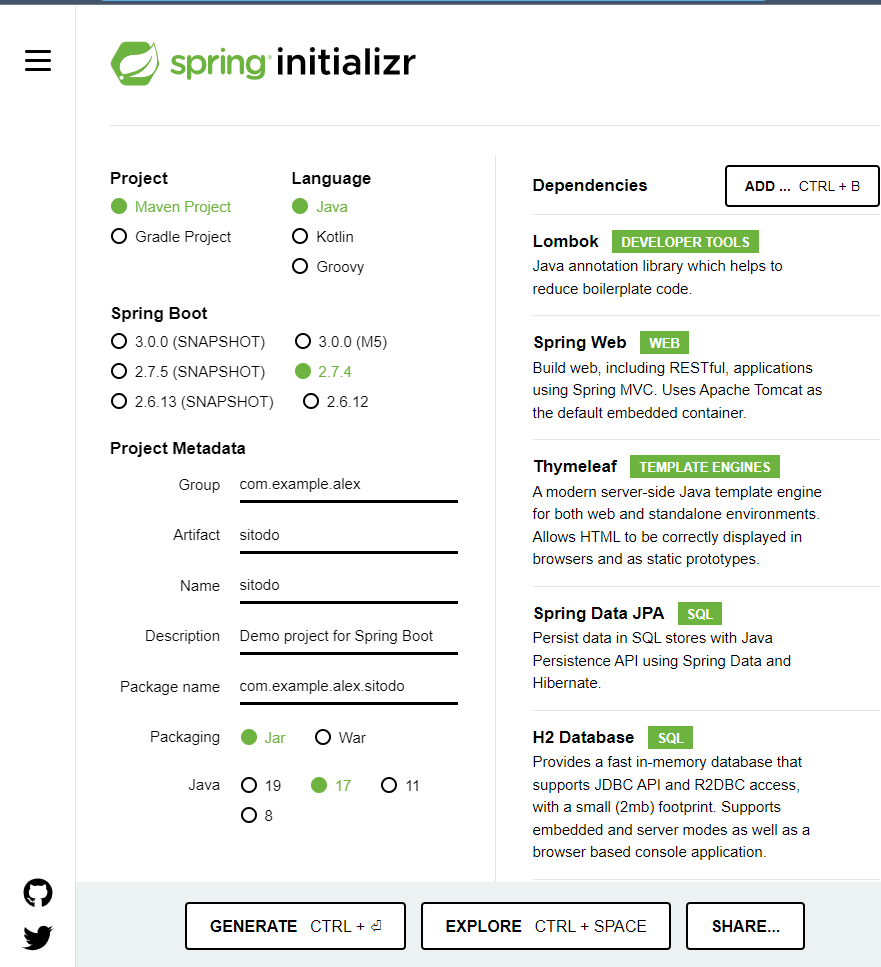

Project Initialisation
Go to Spring Initializr.
Initialise a Spring Boot Project
Choose the following options:
- Maven project
- Java language
-
Spring Boot version 2.7.4 (the latest stable version at the time of writing)
-
Write the name of the base Java package in the group field. The name should follow the reverse-order domain naming scheme. Usually, the name is based on the actual domain name of a company. For example, if you work on a company called Example and the domain name is
example.com, then the reverse-order name iscom.example. - Write the name of the application in the artifact and name fields.
Make sure the name starts with an alphabet symbol and does not contain a hyphen (e.g.
-). - Provide a short description of the project in the description field.
- Package name field should not be modified since it is generated from the values set in group and artifact fields.
For example, if the group is set to
com.exampleand artifact is set tositodo, then the generated name will becom.example.sitodo. - Choose Java version 17 because it is the LTS (long-term support) version at the time of writing.
Include the following dependencies as well:
- Lombok
- Spring Web
- Thymeleaf
- Spring Data JPA
- H2 Database
The final options should be similar to the following screenshot:

Generate and download the base code as a ZIP file by clicking the Generate button. Extract the downloaded ZIP file into a directory of your choice. For example, if you extract the ZIP file into the home directory of your operating system (OS), there would be a new directory containing the source code at the following path:
- GNU/Linux-based OS (e.g. Debian, Ubuntu):
/home/MyAccount/sitodo - Windows:
C:\Users\MyAccount\sitodo
Open a (terminal) shell in your OS and go to the project directory:
cd <path to the project directory>
Use provided Maven wrapper (mvnw) in the project directory to build the project using package command:
./mvnw package
If everything goes well, you will see a new directory named output that contains a JAR file.
Since we have verified that the project can be built successfully,
clean up the build artifacts using mvnw clean command:
./mvnw clean
Initialise a Local Git Repository
Initialise the current working directory where the project was extracted as a new Git repository:
git init -b main .
Configure the local repository to use your credentials on GitHub:
git config user.name "<Full Name>"
git config user.email "<Email Address>"
Add all files into Git and save it as a new commit:
git add .
git commit
Create an Online Git Repository on GitHub
Go to GitHub and create a new repository. You can name it anything, but try to make it descriptive. For the purpose of the bootcamp, you can name your new repository as "Sitodo".
Once you created the new repository, take note of its clone URL on GitHub.
Pick the HTTPS clone URL if you are new to Git and GitHub.
Then, go back to your shell and add a new remote called origin using git command:
git remote add origin <URL to the remote repository>
Then push the commit from the main branch (i.e. the default branch in your local Git repository) to GitHub:
git push origin main
Open GitHub page of your repository and see if the source code has been pushed successfully. Now let us move on to the next part of the course, which is to get introduced with test-driven development.